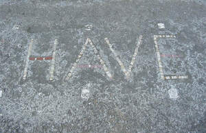

Trade Mark Journal No.2025/050 12 December 2025
UK00004304298 2 December 2025 (14,25,42)

- Class 14
- Horological instruments; Horological products; Horological articles; Dials for horological articles; Dials (clockmaking and watchmaking); Chronographs for use as timepieces; Timepieces; Horological instruments having quartz movements; Pendulums [clock- and watchmaking]; Dials [clock- and watchmaking]; Dials for clock- and watchmaking; Watchmaking pendulums; Cases for horological instruments; Cases for clock- and watchmaking; Barrels [clock- and watchmaking]; Faces for horological instruments; Anchors [clock- and watchmaking]; Dials for clock and watch-making; Clock hands [clock- and watchmaking]; Chronographs as watches; Chronographs [watches]; Chronographs for use as watches; Horological instruments made of gold; Oscillators for timepieces; Cases for clock and watch-making; Parts and fittings for horological instruments; Electronic timepieces; Electrical timepieces; Mechanical watches; Presentation boxes for horological articles; Presentation cases for horological articles; Cases of precious metals for horological articles; Cases [fitted] for horological articles; Wristwatches; Clockworks; Clockmaking pendulums; Electric timepieces; Chronometers; Mechanical watches with manual winding; Clocks and watches; Watches and clocks; Mechanical watch oscillators; Quartz watches; Quartz clocks; Movements for clocks and watches; Movements for watches and clocks; Timekeeping instruments; Oscillators for watches; Mechanical watches with automatic winding; Clocks having quartz movements; Chronometric instruments; Escapements; Housings for clocks and watches; Clocks and watches, electric; Electronic watches; Cases for watches and clocks; Cases adapted to contain horological articles; Diving watches; Dials for watches; Wrist watches; Watches; Industrial clocks; Parts for clockworks; Clocks and watches for pigeon-fanciers; Chronometric apparatus and instruments; Dials for clocks; Digital clocks; Sports watches; Cases for chronometric instruments; Electronic clocks; Clocks; Wristwatches with pedometers; Pendulum clocks; Oscillators for clocks; Automobile clocks; Parts and fittings for chronometric instruments; Miniature clocks; Solar watches; Digital watches with automatic timers; Clock dials; Alarm watches; Time clocks [master clocks] for controlling other clocks; Wristwatches with GPS apparatus; Clock cases being parts of clocks; Watch winders; Parts for watches; Master clocks; Clocks incorporating ceramics; Clock movements; Dials for clock and watch making; Dials [clock and watch making]; Pocket watches; Control clocks [master clocks]; Pendulums [clock and watch making]; Timekeeping systems for sports; Fittings for watches; Electronic alarm clocks; Wristwatches with pedometer feature; Atomic clocks; Faces for chronometric instruments; Sundials; Watches incorporating a telecommunication function; Straps for wristwatches; Automatic watches; Platinum watches; Watch cases [parts of watches]; Electric watches; Digital clocks with automatic timers; Wristwatches with GPS feature; Watch dials.
- Class 25
- Clothing; Knitwear [clothing]; Jackets [clothing]; Ready-to-wear clothing; Woolen clothing; Furs [clothing]; Garments for protecting clothing; Clothing layettes; Layettes [clothing]; Linen clothing; Headbands [clothing]; Headbands for clothing; Gloves [clothing]; Gloves as clothing; Clothes; Aprons [clothing]; Maternity clothing; Jerseys [clothing]; Kerchiefs [clothing]; Denims [clothing]; Shorts [clothing]; Cashmere clothing; Capes (clothing); Oilskins [clothing]; Gabardines [clothing]; Leather clothing; Clothing of leather; Leather (Clothing of -); Silk clothing; Collars [clothing]; Parts of clothing, footwear and headgear; Knitted clothing; Veils [clothing]; Windproof clothing; Hoods [clothing]; Corsets [clothing, foundation garments]; Embroidered clothing; Wristbands [clothing]; Bandeaux [clothing]; Belts [clothing]; Belts for clothing; Waterproof clothing; Rainproof clothing; Casual clothing; Visors [clothing]; Jackets being sports clothing; Jackets (Stuff -) [clothing]; Stuff jackets [clothing]; Bottoms [clothing]; Playsuits [clothing]; Ready-made clothing; Clothing for leisure wear; Latex clothing; Infant clothing; Woven clothing; Trunks being clothing; Leisure clothing; Clothing for sports; Sports clothing; Athletic clothing; Drawers [clothing]; Drawers as clothing; Ties [clothing]; Clothing for children; Muffs [clothing]; Bodies [clothing]; Clothing for babies; Tops [clothing]; Clothing for infants; Clothing for cycling; Weatherproof clothing; Fabric belts [clothing]; Pockets for clothing; Water-resistant clothing; Triathlon clothing; Handwarmers [clothing]; Clothing for skiing; Beach clothing; Thermal clothing; Chaps (clothing); Cowls [clothing]; Men's clothing; Fishing clothing; Dance clothing; Mitts [clothing]; Braces for clothing; Footwear for sport; Footwear for use in sport; Sport shoes; Boots for sport; Sport shirts; Clothes for sport; Sport coats; Sport stockings; Sports jerseys and breeches for sports; Footwear for sports; Sports footwear; Sports jerseys; Sports singlets; Sports shoes; Footwear not for sports; Sports jackets; Combative sports uniforms; Sports wear; Sports vests; Boots for sports; Sports socks; Sports garments; Clothes for sports; Sports pants; Sports shirts; Sports clothing [other than golf gloves]; Sports bras; Sports bibs; Sports caps; Sports headgear [other than helmets]; Sports overuniforms; Athletics footwear; Sports over uniforms.
- Class 42
- Design of clothing, footwear and headgear; Designing of clothing; Design of clothing; Design of clothing accessories.
Alessandro Neboso